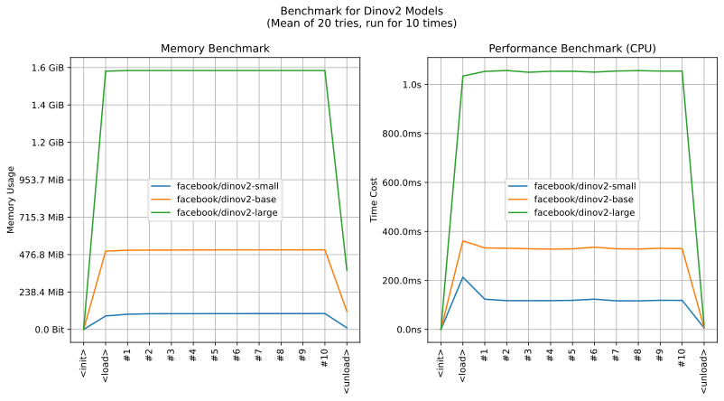

realutils.metrics.dinov2
- Overview:
This module provides functionality for generating embeddings from images using the DINOv2 model. It includes utilities for image preprocessing and model inference using ONNX runtime.
The module supports different DINOv2 model variants and provides configurable preprocessing options.
The ONNX models are hosted on deepghs/dinov2_onnx.
This is an overall benchmark of all the dinov2 models:

get_dinov2_embedding
- realutils.metrics.dinov2.get_dinov2_embedding(image: str | PathLike | bytes | bytearray | BinaryIO | Image, model_name: str = 'facebook/dinov2-base', fmt='embedding', **kwargs)[source]
Generate embeddings from an image using DINOv2 model.
This function performs the following steps:
Load and preprocess the image
Run inference using DINOv2 model
Return embeddings in requested format
- Parameters:
image (ImageTyping) – Input image (can be path, URL, PIL Image, etc.)
model_name (str) – Name of DINOv2 model variant to use
fmt (str) – Output format (‘embedding’, ‘pooler_output’, or ‘last_hidden_state’)
kwargs – Additional preprocessing parameters
- Returns:
Image embeddings in requested format
- Return type:
numpy.ndarray
- Example:
>>> from realutils.metrics import get_dinov2_embedding >>> >>> embedding = get_dinov2_embedding('unsplash_0aLd44ICcpg.jpg') >>> embedding.shape (768,)